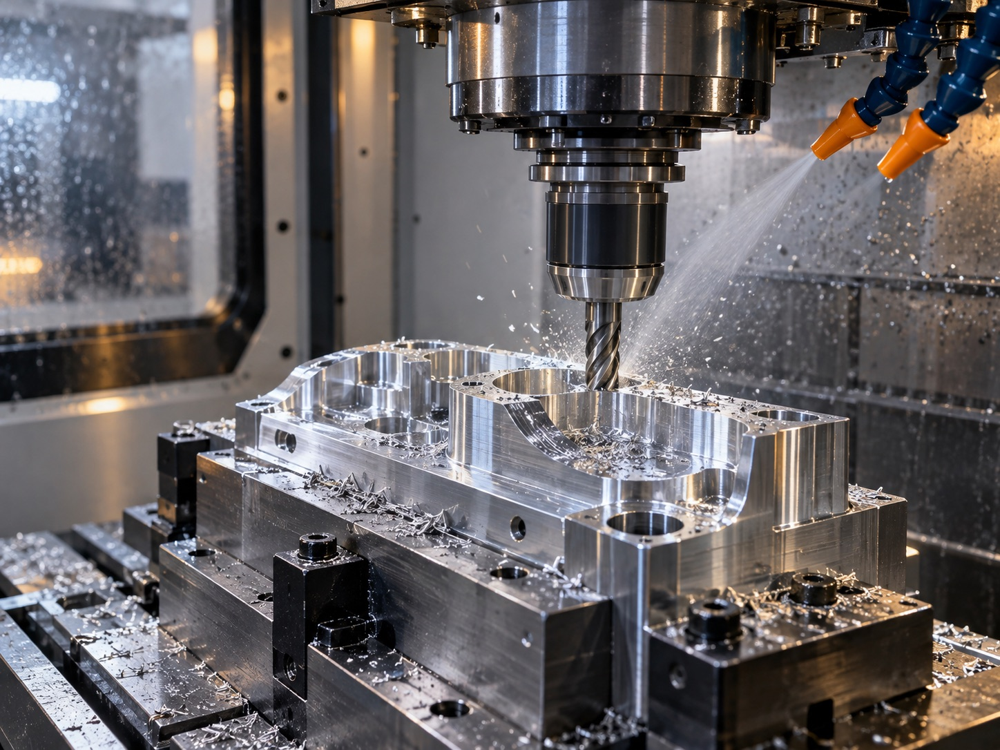
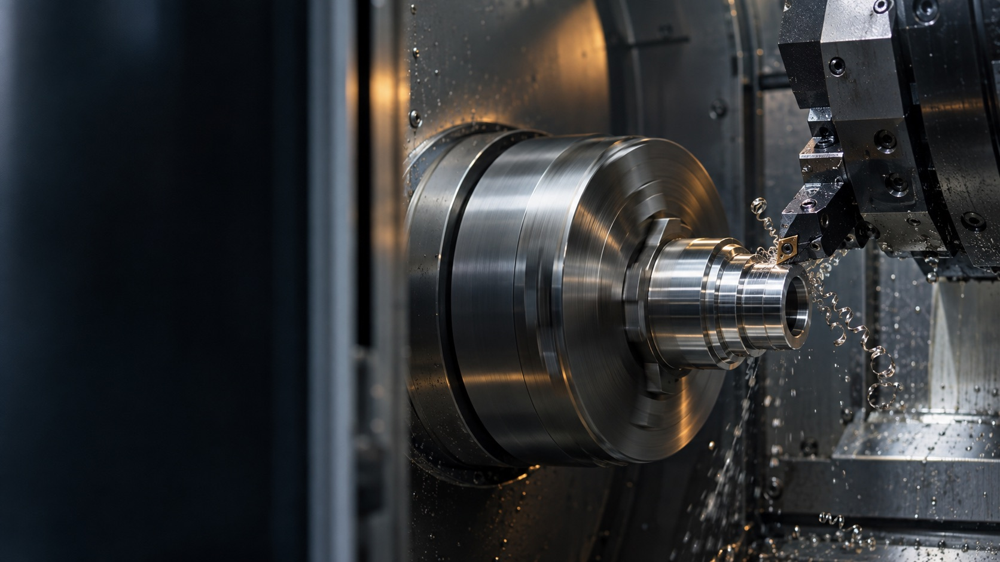
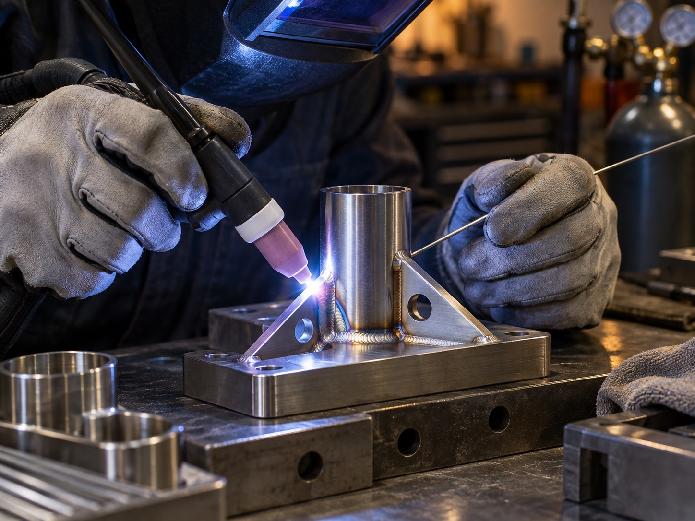
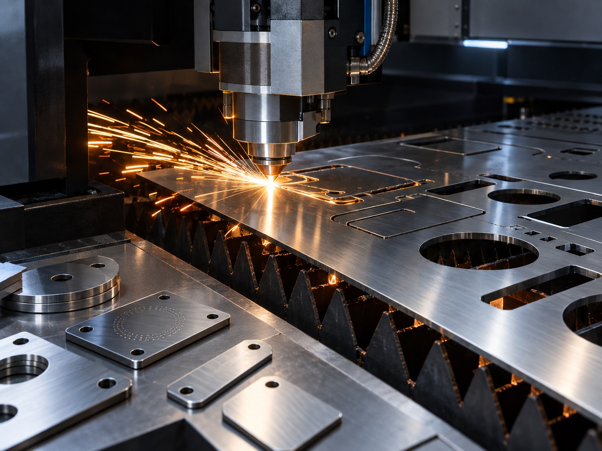

01
CNC milling
3-axis vertical machining for accurate prototypes, fixtures and small production batches across a broad range of materials.
Precision engineering · Staffordshire
Prototype and small-batch manufacturing backed by experienced people, capable machinery and a direct, responsive service.
Built for exacting work
JWL Engineering is a family-run precision manufacturing company in Polesworth, Staffordshire. We combine hands-on engineering experience with modern equipment to take components from drawing or concept through to finished part.
Our strength is responsive prototype and small-batch work. We communicate directly, solve practical manufacturing challenges and treat every order—whether for an individual engineer or an international organisation—with the same care.
What we do
Flexible in-house processes reduce hand-offs, shorten lead times and give us close control from first operation to final identification.

3-axis vertical machining for accurate prototypes, fixtures and small production batches across a broad range of materials.

Efficient turned and milled features in fewer operations, supporting repeatable quality on complex components.

Careful welding and small-item fabrication for assemblies, brackets and specialist one-off requirements.

Clean, accurate sheet cutting alongside permanent laser marking for component identification and traceability.
How we work
A straightforward process, with access to the people responsible for making your parts.
We discuss the application, drawings, materials, quantities and delivery priorities.
We select an efficient manufacturing route and resolve practical details before cutting metal.
Our team machines, fabricates and marks the work using the right combination of in-house processes.
Parts are checked, carefully packed and dispatched across the UK or worldwide.
Trusted across demanding sectors
We support customers and supply chains in industries where dependable workmanship, discretion and responsive delivery are essential.
Components supporting energy and critical national infrastructure.
Specialist work for petrochemical, gas, offshore and shipbuilding applications.
Prototype and low-volume parts for fast-moving engineering programmes.
Confidential subcontract manufacture for businesses of every scale.
Manufacturing, improved in-house
Alongside our physical manufacturing capability, we develop and operate internal software systems that improve production planning, workflow visibility and deployment across our own business.
These tools are built for JWL Engineering’s operational use. They help our small team work consistently, respond quickly and keep practical manufacturing information connected.
Talk to an engineer
Send us an outline of the part, quantity, material and timescale. We’ll respond directly and let you know how we can help.
Email your enquiryPooley Lane
Polesworth
Tamworth, Staffordshire
B78 1JA
United Kingdom
JWL Engineering Limited
Company no. 06805815
Registered in England and Wales